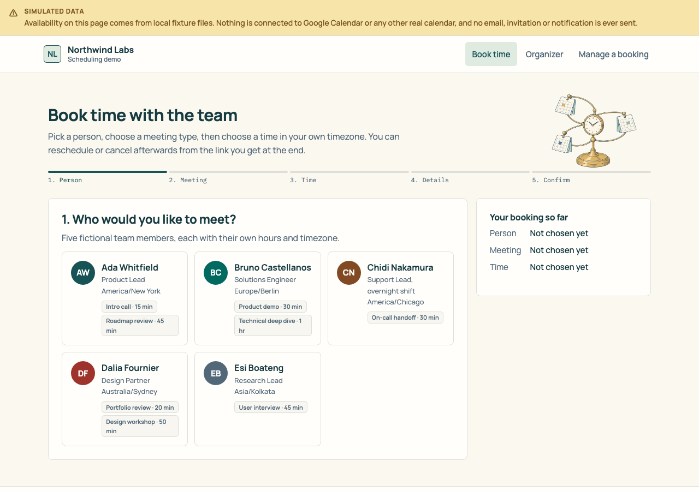

Fictional product demo · read-only public preview
Team scheduling
One booking flow for a small team: choose a person and meeting, find a time across timezones, then manage the booking.
Preview only. The tested local prototype includes booking, rescheduling, cancellation and an organizer view. Its organizer route has no authentication, so this public preview contains only a screenshot and invented sample data. No real calendar, email or account is connected.

Guest flow
Person → meeting type → available time → details → confirmation.
Timezones
The local engine handles daylight saving and a member's own availability rules.
Manage
Fictional bookings can be rescheduled or cancelled in the local prototype.